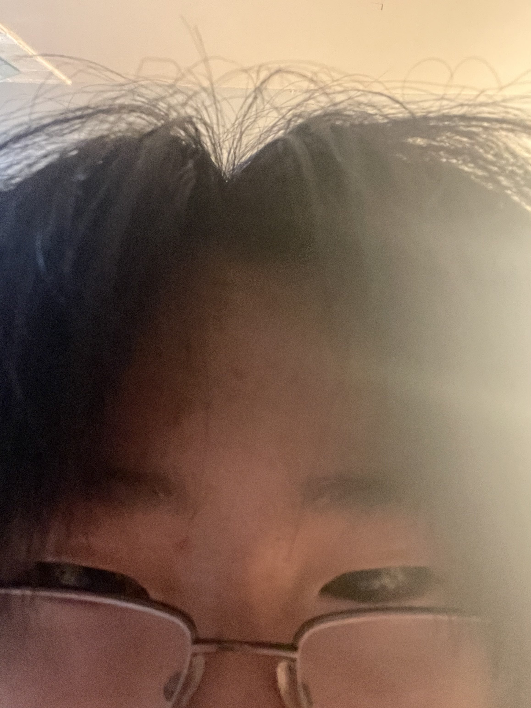

Me_irl
My name is Tsz Fei Wang. I am a grade 10 student at William Lyon Mackenzie CI.
Interests
My interests include sleeping, playing violin, and wasting time.
Community involvement
I play in the Mackenzie String Ensemble, a great music ensemble that everyone should join.
Additionally, I train other students in Nutrition at HOSA. Hydration or Diedration.
Other community involvements include Cybersecurity club, Math club, Wind Symphony, and stalking Eric Ning at chess club.